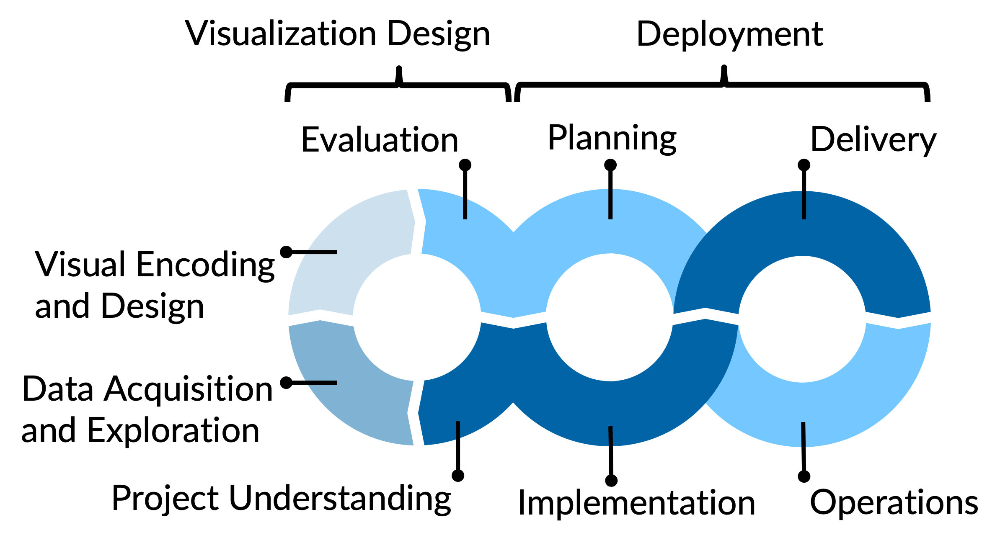

Sample Project
This is a template for a data visualization project using Python, uv for environment and package management and Quarto for documentation.
To adapt to your individual project change sample to the respective project name in the commands below
Adapt the LICENSE as required.
To do: Provide a brief description of the project here.
Project Organisation
The visualization product development is organised according to the following process model:

Code and configurations used in the different project phases are stored in the correspoding subfolders. Documentation artefacts in the form of a Quarto project are provided in docs.
| Phase | Code folders | Documentation section | docs-File |
|---|---|---|---|
| Project Understanding | - | Project Charta | project_charta.qmd |
| Data Acquisition and Exploration | eda |
Data Report | data_report.qmd |
| Visual Encoding and Design | encoding-design |
Visual Encoding and Design | viz_encoding_design.qmd |
| Evaluation | evaluation |
Evaluation | evaluation.qmd |
| Deployment | deployment |
Deployment | deplyoment.qmd |
To do: Adjust accoding to your specific project needs - ensure consistency with readme, documentation, etc.
To do: add link to documentation website for convenience.
See section Quarto Setup and Usage for instructions on how to build and serve the documentation website using Quarto.
Python Environment Setup and Management with uv
Make sure to have uv installed: https://docs.astral.sh/uv/getting-started/installation/
After cloning the repository, create the python environment with all dependencies based on the .python-version, pyproject.toml and uv.lock files by running
uv syncTo add new dependencies, use
uv add <package>which will add the package to pyproject.toml and update the uv.lock file. You can also specify a version, e.g. uv add pandas==2.0.3.
Remove packages with
uv remove <package>Commit changes to pyproject.toml and uv.lock files into version control.
Run uv sync after pulling changes to update the local environment.
Whenever the python environment is used, make sure to prefix every command that uses python with uv run, e.g.
uv run python script.pyYou can also run
source .venv/bin/activateto activate the project Python environment in a terminal session in order to avoid having to prefix every command.
Runtime Configuration with Environment Variables
The environment variables are specified in a .env-File, which is never commited into version control, as it may contain secrets. The repo just contains the file .env.template to demonstrate how environment variables are specified.
You have to create a local copy of .env.template in the project root folder and the easiest is to just rename it to .env.
The content of the .env-file is then read by the pypi-dependency: python-dotenv. Usage:
import os
from dotenv import load_dotenvload_dotenv reads the .env-file and sets the environment variables:
load_dotenv()which can then be accessed (assuming the file contains a line SAMPLE_VAR=<some value>):
os.environ['SAMPLE_VAR']Quarto Setup and Usage
Setup Quarto
- Install Quarto
- Optional: quarto-extension for VS Code
- If working with svg files and pdf output you will need to install rsvg-convert:
- On macOS:
brew install librsvg - On Windows using chocolatey:
- Install chocolatey
- Install rsvg-convert:
choco install rsvg-convert
- On macOS:
Source *.qmd and configuration files are in the docs folder. The Quarto project configuration is in docs/_quarto.yml.
With embedded python code chunks that perform computations, you need to make sure that the python environment is activated when rendering. This can be done by prefixing the render command with uv run, e.g.:
uv run quarto renderWorking on the Documentation
- Make changes to the
.qmdsource files in thedocsfolder - Make sure the project Python environment is activated (see Python environment setup and management)
- Preview locally:
quarto previewfrom thedocsfolder - Build the documentation website:
uv run quarto renderfrom thedocsfolder. This renders todocs/build - Check the website locally by opening
docs/build/index.htmlin a browser
Deployment of the Documentation to GitHub Pages
The documentation website is deployed to GitHub Pages via a GitHub Actions workflow (.github/workflows/publish.yml). Every push to main triggers the workflow, which renders the Quarto project and deploys the result.
The setting execute: freeze: auto in _quarto.yml ensures that Python computations are only executed locally. Results are cached in docs/_freeze and checked into the repository, so the GitHub Actions runner does not need Python — it uses the pre-computed results.
Initial Setup (once)
In the GitHub repository settings, go to Settings > Pages and set the source to GitHub Actions
Render locally so that
_freezecontains cached computation results:cd docs && uv run quarto renderPush the changes to
main
The _freeze directory and the workflow file .github/workflows/publish.yml should already be tracked in the repository.
Publishing Updates
- Build the website locally:
uv run quarto renderfrom thedocsfolder. This updatesdocs/build(gitignored) anddocs/_freeze(checked in) - Check the website locally by opening
docs/build/index.html - Commit and push all updated files (including
docs/_freeze) tomain. The GitHub Actions workflow will render and deploy the site automatically